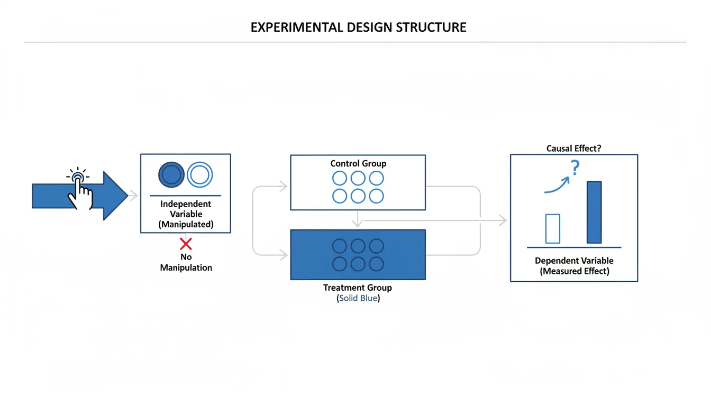
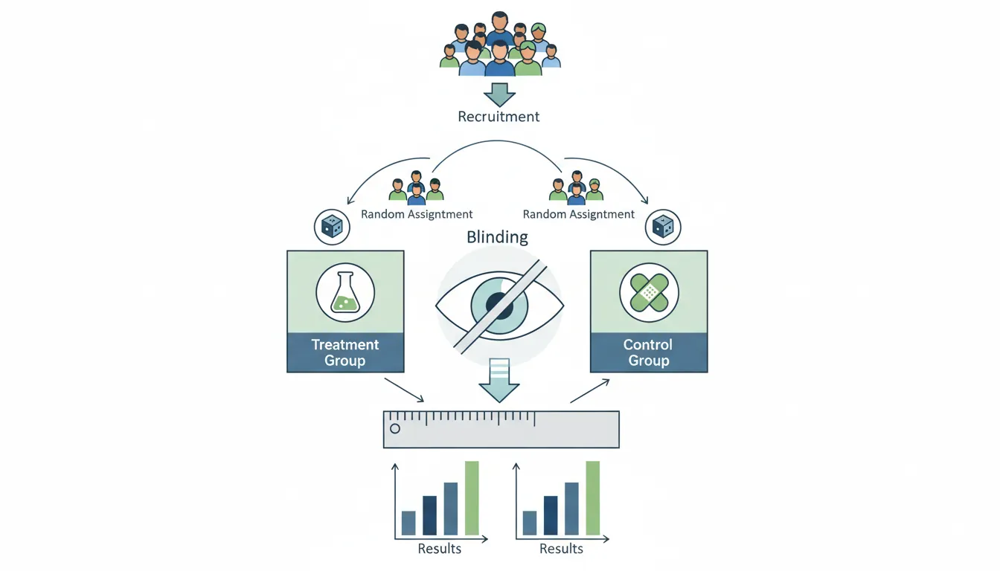
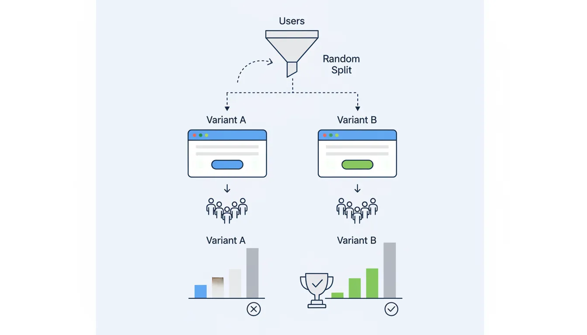
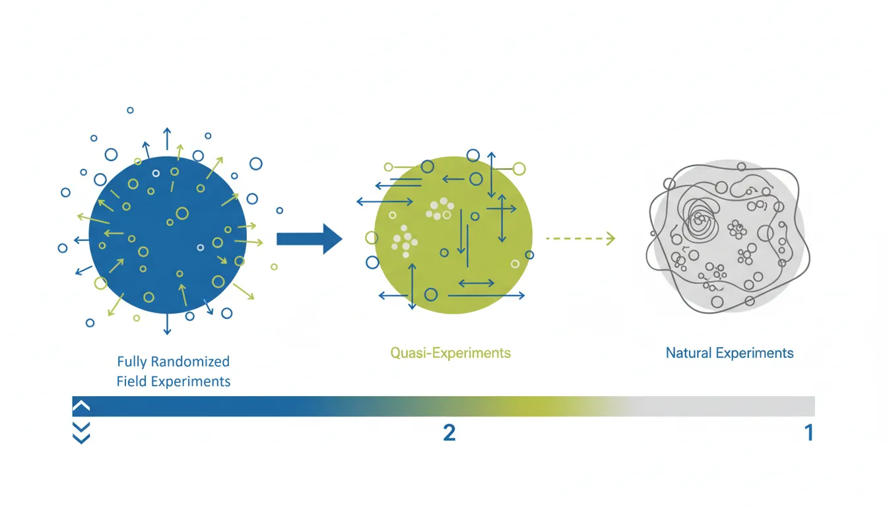
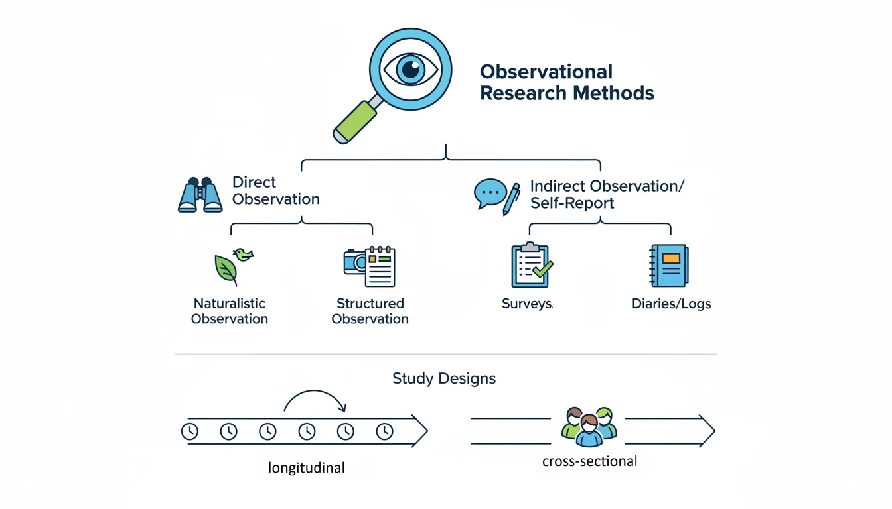

Why Research Methods Matter
Understanding research methods helps you critically evaluate behavioral claims and design your own interventions. In this tenth part of our series, we explore the scientific toolkit of behavioral psychology.
Key Insight
Correlation ≠ causation. Only well-designed experiments with random assignment can establish that X causes Y in behavior.
Behavioral Psychology Mastery
Foundations of Behavior
Core principles, conditioning, behavioral loopHabit Formation & Breaking
Habit loops, building & breaking habitsDecision-Making Psychology
Biases, dual-system thinking, behavioral economicsMotivation & Drive
Intrinsic vs extrinsic, theories, goal psychologyNudge Theory & Choice Architecture
Defaults, framing, behavioral designBehavior Change Models
COM-B, Fogg, transtheoretical modelSocial Influence & Persuasion
Conformity, authority, Cialdini's principlesPractical Applications
Personal, workplace, business, healthBehavioral Neuroscience Basics
Dopamine, stress, habit circuitryBehavioral Research Methods
Experiments, RCTs, field studiesApplied Behavioral Therapy
CBT, exposure therapy, reinforcementExperimental Design Basics
The experiment is the gold standard for establishing causal relationships—it tells us not just that X and Y are related, but that X causes Y.

Key Components of Experiments
| Component | Description | Example |
|---|---|---|
| Independent variable | What the researcher manipulates | Type of message (gain vs loss framing) |
| Dependent variable | What the researcher measures | Behavior change (% signed up) |
| Control group | No-intervention baseline | Receives standard message |
| Treatment group | Receives the intervention | Receives loss-framed message |
| Random assignment | Equal chance of any condition | Flip a coin to assign participants |
Why Random Assignment Matters
Eliminating Confounds
Without random assignment, observed differences might be due to pre-existing differences between groups. If motivated people self-select into the treatment, we can't know if the treatment or their motivation caused success. Random assignment distributes all confounds equally across groups—even ones we haven't measured.
Randomized Controlled Trials (RCTs)
RCTs are the most rigorous experimental design—the "gold standard" for establishing causation.

RCT Process
| Step | Activity | Purpose |
|---|---|---|
| 1 | Define population and recruit | External validity |
| 2 | Randomly assign to conditions | Eliminate selection bias |
| 3 | Deliver intervention to treatment | Test the hypothesis |
| 4 | Measure outcomes blind to condition | Eliminate measurement bias |
| 5 | Compare groups statistically | Determine if effect is real |
Threats to Validity
Common Validity Threats
| Threat | Problem | Solution |
|---|---|---|
| Selection bias | Groups differ before treatment | Random assignment |
| Attrition | Different dropout rates | Intent-to-treat analysis |
| Hawthorne effect | Participants change because observed | Blinding, control groups |
| Experimenter bias | Researcher expectations affect results | Double-blind design |
| Demand characteristics | Participants guess hypothesis | Deception, implicit measures |
A/B Testing in Practice
A/B testing is the tech industry's version of RCTs—applied to websites, apps, and products.

A/B Testing Essentials
| Element | Description |
|---|---|
| Hypothesis | "Changing button color from blue to green will increase clicks by 10%" |
| Metric | Click-through rate (CTR) |
| Randomization | 50% see A (blue), 50% see B (green) |
| Sample size | Run until statistically significant (power calculation) |
| Analysis | Compare conversion rates, check p-value |
Common A/B Testing Mistakes
- Peeking: Checking results early and stopping when they look good
- Small samples: Stopping too early (false positives)
- Multiple comparisons: Testing many variants without correction
- Ignoring segments: Overall effect may mask different effects by user type
Field Studies & Natural Experiments
Sometimes we can't randomly assign people to conditions. Field studies and natural experiments offer alternatives.

Types of Field Research
| Type | Description | Example |
|---|---|---|
| Field experiment | RCT conducted in real-world setting | Testing nudge letters on tax compliance |
| Natural experiment | Exploit naturally occurring "random" assignment | Comparing behavior before/after policy change |
| Quasi-experiment | Comparison without random assignment | Comparing similar schools with different policies |
Observational Methods
When we can't experiment, we observe. Observation describes behavior but can't establish causation.

Observational Methods
| Method | Description | When to Use |
|---|---|---|
| Naturalistic observation | Watch behavior in natural settings | Exploratory research, generating hypotheses |
| Surveys | Self-report questionnaires | Attitudes, beliefs, self-reported behavior |
| Longitudinal studies | Track same people over time | Developmental changes, long-term outcomes |
| Cross-sectional studies | Compare different groups at one time | Quick snapshots, age comparisons |
Statistical Analysis Basics
Statistics help us determine if observed effects are real or just chance.
Key Statistical Concepts
| Concept | Meaning | Guideline |
|---|---|---|
| p-value | Probability of result if null hypothesis true | p < 0.05 traditionally "significant" |
| Effect size | Magnitude of the effect | Cohen's d: 0.2 small, 0.5 medium, 0.8 large |
| Confidence interval | Range likely containing true effect | 95% CI excludes zero = significant |
| Statistical power | Ability to detect true effect | 80% power is standard minimum |
Effect Size vs Statistical Significance
A tiny effect can be statistically significant with enough participants. Always ask: Is the effect big enough to matter? A nudge that increases retirement savings by 0.1% might be significant but not meaningful.
Practical Exercise: Research Evaluation
Try This
When you read a behavioral science claim, ask:
- Was there random assignment? (If not, can't prove causation)
- What was the sample size? (Small samples = unreliable)
- What was the effect size? (Statistical significance ≠ practical importance)
- Has it been replicated? (One study isn't enough)
- Who funded it? (Potential conflict of interest)
Conclusion & Next Steps
You've now learned the foundations of behavioral research:
- Experiments: Manipulate IV, measure DV, random assignment for causation
- RCTs: Gold standard—control group, blinding, intent-to-treat analysis
- A/B testing: Tech industry RCTs—watch for peeking and small samples
- Field studies: Real-world validity, natural experiments when RCTs aren't possible
- Statistics: p-values show significance; effect size shows importance